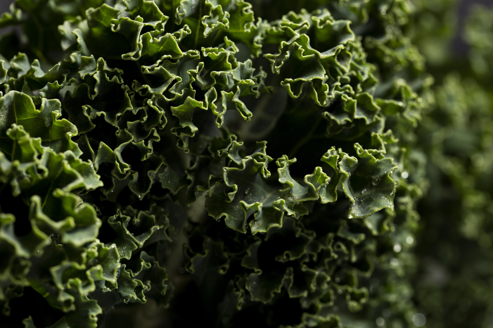

BAKED KALE CHIPS!

Ingredients
- bunch of kale
- tablespoon of olive oil
- teaspoon of flaked sea salt
Directions
- Gather all ingredients
- Preheat the oven to 300 degrees F (150 degrees C). Line a rimmed baking sheet with parchment paper.
- With a knife or kitchen shears carefully remove kale leaves from thick stems: tear into bite-sized pieces.
- Wash and thoroughly dry kale with a salad spinner.
- Drizzle kale leaves with olive oil and toss to combine. Spread out in an even layer on the baking sheet without overlapping and sprinkle with salt.
- Bake until the edges start to brown but are not burnt, 20 to 30minutes.
- ENJOY!
Home